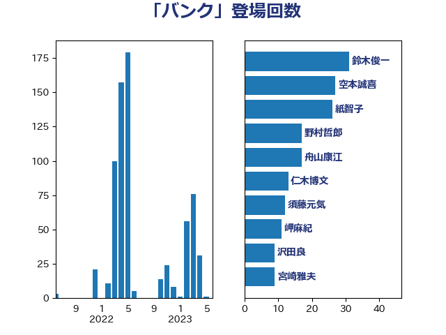

単語「バンク」

| 鈴木俊一 | 自由民主党 | 31 回 |
| 空本誠喜 | 日本維新の会 | 27 回 |
| 紙智子 | 日本共産党 | 26 回 |
| 野村哲郎 | 自由民主党 | 17 回 |
| 舟山康江 | 国民民主党 | 17 回 |
| 仁木博文 | 無所属 | 13 回 |
| 須藤元気 | 無所属 | 12 回 |
| 岬麻紀 | 日本維新の会 | 11 回 |
| 沢田良 | 日本維新の会 | 9 回 |
| 宮崎雅夫 | 自由民主党 | 9 回 |
| 中村裕之 | 自由民主党 | 9 回 |
| 藤巻健太 | 日本維新の会 | 7 回 |
| 田名部匡代 | 立憲民主党 | 7 回 |
| 武部新 | 自由民主党 | 7 回 |
| 酒井庸行 | 自由民主党 | 6 回 |
| 永岡桂子 | 自由民主党 | 6 回 |
| 小島敏文 | 自由民主党 | 6 回 |
| 長友慎治 | 国民民主党 | 5 回 |
| 矢倉克夫 | 公明党 | 5 回 |
| 浅田均 | 日本維新の会 | 5 回 |
| 小山展弘 | 立憲民主党 | 5 回 |
| 宮下一郎 | 自由民主党 | 5 回 |
| 野田国義 | 立憲民主党 | 4 回 |
| 野中厚 | 自由民主党 | 4 回 |
| 赤木正幸 | 日本維新の会 | 4 回 |
| 神谷裕 | 立憲民主党 | 4 回 |
| 池畑浩太朗 | 日本維新の会 | 4 回 |
| 末次精一 | 立憲民主党 | 4 回 |
| 下野六太 | 公明党 | 4 回 |
| 高橋光男 | 公明党 | 3 回 |
| 近藤和也 | 立憲民主党 | 3 回 |
| 笠井亮 | 日本共産党 | 3 回 |
| 稲津久 | 公明党 | 3 回 |
| 田村貴昭 | 日本共産党 | 3 回 |
| 岸真紀子 | 立憲民主党 | 3 回 |
| 宮崎勝 | 公明党 | 3 回 |
| 階猛 | 立憲民主党 | 2 回 |
| 西銘恒三郎 | 自由民主党 | 2 回 |
| 若林健太 | 自由民主党 | 2 回 |
| 簗和生 | 自由民主党 | 2 回 |
| 秋葉賢也 | 自由民主党 | 2 回 |
| 神津たけし | 立憲民主党 | 2 回 |
| 渡辺創 | 立憲民主党 | 2 回 |
| 浅野哲 | 国民民主党 | 2 回 |
| 杉尾秀哉 | 立憲民主党 | 2 回 |
| 斉藤鉄夫 | 公明党 | 2 回 |
| 庄子賢一 | 公明党 | 2 回 |
| 岸田文雄 | 自由民主党 | 2 回 |
| 岩渕友 | 日本共産党 | 2 回 |
| 小熊慎司 | 立憲民主党 | 2 回 |
| 小寺裕雄 | 自由民主党 | 2 回 |
| 大塚耕平 | 国民民主党 | 2 回 |
| 務台俊介 | 自由民主党 | 2 回 |
| 住吉寛紀 | 日本維新の会 | 2 回 |
| 世耕弘成 | 自由民主党 | 2 回 |
| 谷合正明 | 公明党 | 1 回 |
| 角田秀穂 | 公明党 | 1 回 |
| 落合貴之 | 立憲民主党 | 1 回 |
| 萩生田光一 | 自由民主党 | 1 回 |
| 羽田次郎 | 立憲民主党 | 1 回 |
| 細田健一 | 自由民主党 | 1 回 |
| 竹内真二 | 公明党 | 1 回 |
| 神谷宗幣 | 参政党 | 1 回 |
| 石井苗子 | 日本維新の会 | 1 回 |
| 牧野たかお | 自由民主党 | 1 回 |
| 片山大介 | 日本維新の会 | 1 回 |
| 熊谷裕人 | 立憲民主党 | 1 回 |
| 湯原俊二 | 立憲民主党 | 1 回 |
| 渡辺孝一 | 自由民主党 | 1 回 |
| 浜田聡 | NHK党 | 1 回 |
| 浜口誠 | 国民民主党 | 1 回 |
| 浅尾慶一郎 | 自由民主党 | 1 回 |
| 河西宏一 | 公明党 | 1 回 |
| 江田憲司 | 立憲民主党 | 1 回 |
| 櫻井周 | 立憲民主党 | 1 回 |
| 横山信一 | 公明党 | 1 回 |
| 梅村聡 | 日本維新の会 | 1 回 |
| 松本剛明 | 自由民主党 | 1 回 |
| 東徹 | 日本維新の会 | 1 回 |
| 末松義規 | 立憲民主党 | 1 回 |
| 木村英子 | れいわ新選組 | 1 回 |
| 後藤祐一 | 立憲民主党 | 1 回 |
| 岡本三成 | 公明党 | 1 回 |
| 山田俊男 | 自由民主党 | 1 回 |
| 山本佐知子 | 自由民主党 | 1 回 |
| 山崎誠 | 立憲民主党 | 1 回 |
| 山崎正恭 | 公明党 | 1 回 |
| 小沼巧 | 立憲民主党 | 1 回 |
| 小沢雅仁 | 立憲民主党 | 1 回 |
| 坂本哲志 | 自由民主党 | 1 回 |
| 原口一博 | 立憲民主党 | 1 回 |
| 北神圭朗 | 無所属 | 1 回 |
| 勝目康 | 自由民主党 | 1 回 |
| 勝俣孝明 | 自由民主党 | 1 回 |
| 加藤竜祥 | 自由民主党 | 1 回 |
| 加藤勝信 | 自由民主党 | 1 回 |
| 伊藤渉 | 公明党 | 1 回 |
| 伊藤孝恵 | 国民民主党 | 1 回 |
| 丹羽秀樹 | 自由民主党 | 1 回 |
| 中西祐介 | 自由民主党 | 1 回 |